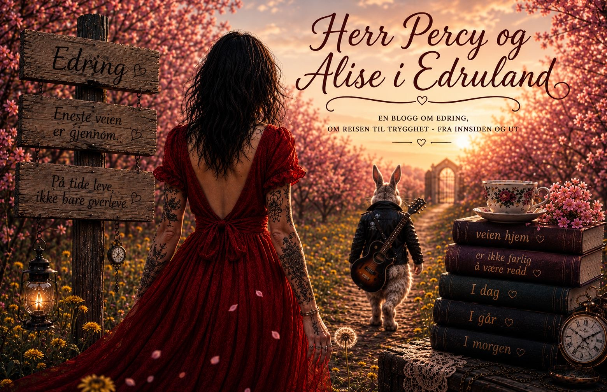

Dette er et stille rom inne i Trygg Sirkel. Et sted for ord som får puste, tanker som får lande, og små steg som likevel betyr alt.
Her følger vi Herr Percy og Alise gjennom Edruland — på vei hjem, gjennom det som var, det som er, og det som sakte kan bli godt igjen.
Hva en blekksprut lærte meg om alkoholisme.
Les innlegget →Om å fotografere livet sitt gjennom mange år — og plutselig se hvor mye som var der, samtidig som man selv følte seg et sted langt borte.
Les innlegget →Om skam, løgner, tomgods og den stille kampen for å lære seg å stole på seg selv igjen — én handling av gangen.
Les innlegget →Om edring, sannhet, avhengighet og å holde blikket på det lille som fører oss mot land.
Les innlegget →Om destruktive mønstre, indre konflikter, skam, relasjoner, edring og kampen mellom sannhet og flukt.
Les innlegget →Om mennesker, selvfølelse, ensomhet, edring og innsikten i at ingen egentlig går alene.
Les innlegget →Om det vi bærer inni oss, reaksjoner, overlevelse og valget om å fylle koppen med noe annet enn flukt.
Les innlegget →Om sommerangst, minner, jul, generasjoner av uro – og valget om å stoppe det som blir sendt videre.
Les innlegget →Det første innlegget. Begynnelsen på en ny fortelling, et nytt språk og en vei inn i edring.
Les innlegget →